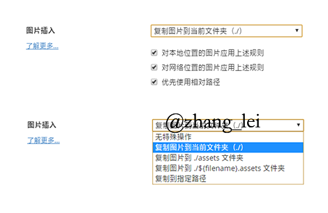

Markdown语法
标题
| 语法 |
|---|
#一级标题 |
##二级标题 |
###三级标题 |
####四级标题 |
#####五级标题 |
######六级标题 |
字体样式
*斜体* 斜体
_斜体_ _斜体_
**粗体** 粗体
***加粗斜体***加粗斜体
~~删除线~~ 删除线
插入图片或连接
插入链接与插入图片的语法很像，区别在一个
!号图片为：
链接为：
[]()
[描述](图片路径或者URL) 描述可以不写
分割线三种方式
你可以在一行中用三个以上的星号*、减号-、底线_来建立一个分隔线，行内不能有其他东西。
---
***
___
代码块
行内式：如果在一个行内需要引用代码，只要用反引号`引起来就好（一般在ESC键下方，和~同一个键）
`用两个反引号` 行内/单行代码块
多行代码块与语法高亮：在需要高亮的代码块的前一行及后一行使用三个单反引号“`”包裹
```js
三个反引号可以表明代码语言,这里写的js
````
<script>
console.log("我是js代码块");
</script>引用
在被引用的文本前加上>符号，以及一个空格就可以了，如一个>符号会产生一次缩进
>引用
引用
>>引用
引用
>>>引用
引用
列表
无序列表
使用 *，+，- 都可以表示无序列表。任意选用一个即可, 注意：符号后面一定要有一个空格，起到缩进的作用。
- 无序列表-
* 无序列表
+ 无序列表
- 无序列表
- 无序列表
- 无序列表
有序列表
使用数字和一个英文句点表示有序列表。 注意：英文句点后面一定要有一个空格，起到缩进的作用。
1.有序列表
2.有序列表
3.有序列表
- 有序列表
- 有序列表
- 有序列表
转义字符\
如果在使用符号时与Markdown语法冲突,可以在符号前面加上\即可正常显示
如在使用列表时，只要是数字后面加上英文的点，就会无意间产生列表，比如2017.12.30 这时候想表达的是日期，有些软件把它被误认为是列表。解决方式：在每个点前面加上\就可以了
表格
|姓名|性别|分数|
|:-:|:-:|:-:|
|小明|男|100|
|小明|男|100|
表格对齐方式：我们可以指定表格单元格的对齐方式，冒号在左边表示左对齐，右边表示有对齐，两边都有表示居中
| 姓名 | 性别 | 分数 |
|---|---|---|
| 小明 | 男 | 100 |
| 小明 | 男 | 100 |
结束语
Markdown语法学到这里日常已经够用了,下面介绍一款实时预览的 Markdown 文本编辑器
Typora
Typora 是一款支持实时预览的 Markdown 文本编辑器。它有 OS X、Windows、Linux 三个平台的版本，并且由于仍在测试中，是完全免费的。
点击下载:Typora
GFM 标准
GFM 标准，它是由著名代码托管网站 GitHub 所制定的。Typora 主要使用的也是 GFM 标准。同时，你还可以在 文件 - 偏好设置 - Markdown 语法偏好 - 严格模式 中将标准设置为「更严格地遵循 GFM 标准」。具体内容你可以在官方的 这篇文档 中查看。
设置图片
Typora 支持在拖动或 Ctrl + V 网络图片后自动将其保存到本地。你可以在 文件 - 偏好设置 - 编辑器 - 图片插入 中选择复制到哪个路径，什么情况下需要复制。
